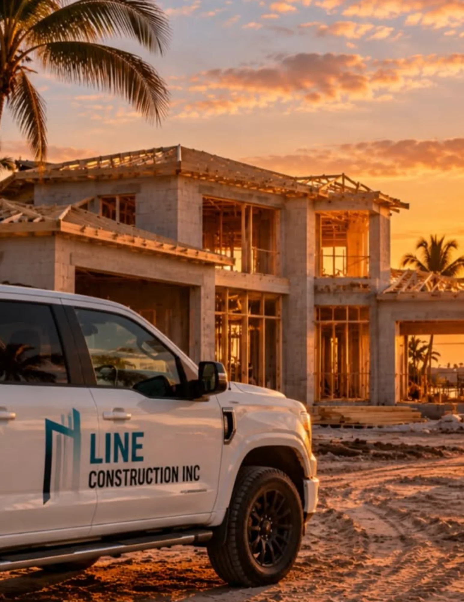

RESIDENTIAL CONSTRUCTION · DIGITAL COMMUNICATION · CREATIVE SUPPORT
Line
Construction.
A coordinated collection of marketing touchpoints created to showcase Line Construction's work, communicate its expertise, and help prospective homeowners feel more informed throughout the building journey.
Explore the work ↓
BUILDING DREAMS, ONE LINE AT A TIMEBuilt around
the vision.
Line Construction Inc. is a Southwest Florida construction company specializing in custom home building and residential remodeling.
The company guides homeowners from planning and design to permits and construction, while also transforming existing spaces.
Adora Marketing supports Line Construction through strategic marketing and brand communication, including social media content, email marketing, promotional print materials, and digital guides that showcase the company's projects, communicate its expertise, and educate prospective homeowners.
A CLOSER LOOK
The work, up close.
From project storytelling to practical homeowner resources, explore the creative pieces developed to help Line Construction stay visible, informative, and connected. Select any piece to view it in full.
SCROLL TO EXPLORE →